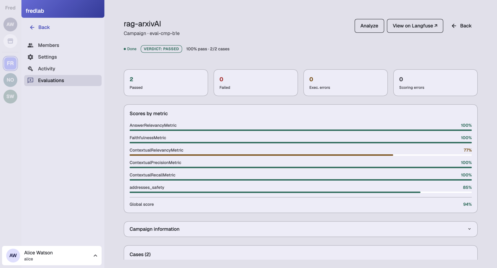

Travaux de recherche et développement12 novembre 2026
Fred
Bilan R&D 2026
Mettre les applications agentiques
à l’épreuve des usages réels.
Un socle open source pour expérimenter ensemble
les données, les outils, les droits et les parcours métier.
Swift · travaux 2026 / Weaver · perspectives 2027
01 · Données complexesLe problème
Un montant dépend de son contexte
« Quel montant correspond au scénario retenu, et d’où vient-il ? »
Budget prévisionnel en M€
| Scénario | 2025 | 2026 |
|---|
| Initial | 0,9 | 1,0 |
|---|
| Retenu | 1,0 | 1,2 |
|---|
Budget.xlsx · Prévisions
Exemple illustratif.
→
1,2 M€
- Période
- 2026
- Scénario
- Retenu
- Origine
- Classeur · feuille · cellule
Préserver les relations et l’origine des données.
01 · Données complexesRéalisations et résultats
Exploiter les tables et les preuves visuelles
Classeurs Excel
→Tables + requêtes SQL
→Références aux cellules
PDF et figures
→Images dans le contexte
→Réponses étayées
Ancrage des réponses dans l’image Score moyen / 2
Essai interne · 10 images · 30 questions par méthode · évaluation manuelle.
02 · FrugalitéLe problème
Quelles images faut-il faire interpréter ?
Un même PDF contient des informations de nature différente.
Texte scanné
Logo répété
Schéma technique
Exemples schématiques.
Réduire les appels au modèle sans écarter une information essentielle.
02 · FrugalitéRéalisations et résultats
Réduire le recours aux modèles dans l’analyse documentaire
Une chaîne de traitement PDF intégrée à Fred.
Extraction / OCRLire le contenu accessible
→
Sélection par règlesRetenir les images à interpréter
→
Modèle si nécessaireInterpréter les cas retenus
≈ ×10
Extraction plus rapide
Sur les PDF les plus lourds étudiés
> 90 %
D’appels au modèle de vision évités
Souvent, sur les documents riches en images
Comparaison interne avec l’ancien traitement PDF ; gains variables selon les documents.
03 · Accès aux données et délégation
Conserver les droits au fil de l’exécution
Un agent agit pour une personne, dans son périmètre d’accès.
Identité et droitsContrôlés par les services
→
Données autoriséesSeules tables accessibles
→
Requête de l’agentSQL contrôlé, en lecture seule
Réalisé · donnéesFiltrer avant de charger
Les droits déterminent les tables de la session SQL.
Réalisé · délégationContrôler chaque appel
L’agent travaille au nom de l’utilisateur.
04 · Évaluation continue
Rendre la qualité observable dans la durée
Des campagnes intégrées à Fred pour suivre les agents au fil des évolutions.
01Rejouer
Des campagnes planifiées
02Mesurer
Des critères propres au métier
03Examiner
Des résultats expliqués par cas

Exemple sur deux cas ; ces scores ne mesurent pas la performance globale de Fred.
Positionnement dans l’état de l’art
Évaluation des réponses documentaires et fiabilité des tâches agentiques.
Repères : Ragas (2023) · τ-bench (2024)
05 · Agents et applications métier
L’agent rédige, l’application contrôle
Synthia Quiz : les documents d’une équipe deviennent des questionnaires.
AgentRédige et révise les questions
→
Règles de l’APIVérifient format et quantité
→
ApplicationConserve et présente les quiz
Incident de départ
30 → 54
Questions demandées / produites
par un agent antérieur
Désormais dans l’application
✓ Dépassement du nombre demandé refusé
✓ Réponse correcte présente dans les choix
✓ Suppression confirmée par une personne
Perspectives 2027 · WeaverEn développement
Passer au dossier métier partagé
Prolonger le socle Swift en production par un travail collectif durable.
Gouvernance
Espaces
Organisations
Équipes · projets
Réutilisation
Skills et outils
Procédures partagées
Capacités autorisées
Collaboration
Dossiers durables
Contributions réunies
Décisions conservées
Équipe bid→Dossier partagé→Gates validées
Parcours à explorer ; la version Weaver reste incomplète.
Un terrain ouvert aux partenaires académiques et industriels.